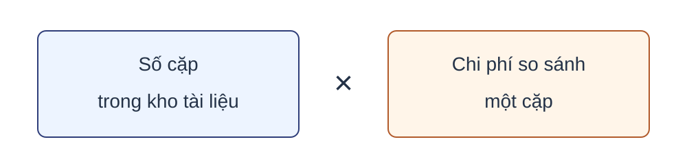
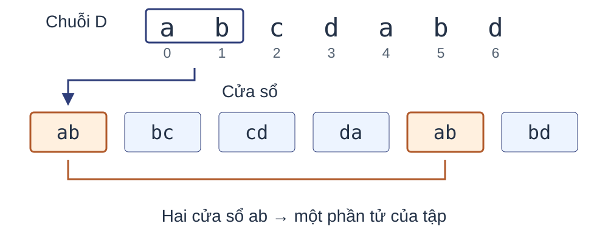
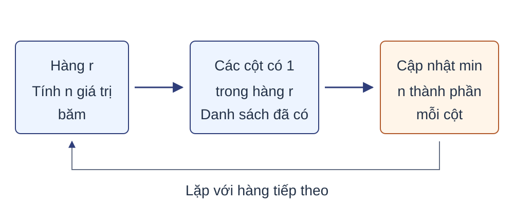

Biểu diễn tương đồng: Shingling và MinHash
Giải thuật nền tảng của Khoa học dữ liệu
Bài 05 · Học kỳ 1 · Năm học 2026–2027
Bài 05 mở mạch tương đồng và hàng xóm gần. Phạm vi gồm Jaccard, shingling và MinHash theo Chương 3, mục 3.1–3.3 của Mining of Massive Datasets (MMDS). Kết quả là một biểu diễn để ước lượng tương đồng giữa hai tài liệu; lựa chọn cặp ứng viên thuộc bài kế tiếp.
Nội dung
Tài liệu gần trùng và độ tương đồng Jaccard Shingling văn bản MinHash theo hoán vị Chữ ký MinHash Tính chữ ký bằng hàm băm Tổng kết Bài tập vận dụng Jaccard là đại lượng cần đo giữa hai tập. Shingling chuyển mỗi văn bản thành một tập để áp dụng đại lượng ấy. MinHash nối Jaccard với xác suất hai tập chọn cùng một phần tử; nhiều MinHash ghép thành chữ ký ngắn. Phần thứ năm tính chữ ký bằng hàm băm thay cho hoán vị thật của các phần tử. Phần bài tập dùng năm bài của sách.
Mục tiêu và kiến thức đầu vào
Tạo tập shingle và tính Jaccard. Chứng minh xác suất trùng MinHash bằng Jaccard. Ước lượng Jaccard từ chữ ký. Tính chữ ký và đếm chi phí. Kiến thức đầu vào
Tập hợp và chuỗi. Hàm băm và vector. Xác suất, kỳ vọng và phương sai. Phép giao và hợp được dùng để định nghĩa Jaccard. Thứ tự và phần tử nhỏ nhất được dùng trong MinHash. Kỳ vọng và phương sai của biến chỉ báo được nhắc lại khi đánh giá chữ ký. Thuật toán cuối bài chỉ cần vòng lặp, ma trận và phép lấy cực tiểu.
Bài toán tài liệu gần trùng
Đầu vào: kho văn bản lớn như trang Web hoặc bản tin.
Đầu ra: độ tương đồng văn bản của từng cặp tài liệu.
Trang phản chiếu, bản tin đăng lại và bài đạo văn giữ phần lớn văn bản gốc nhưng khác ở một số đoạn.
So sánh từng ký tự chỉ phát hiện hai tài liệu trùng hoàn toàn.
Mining of Massive Datasets (MMDS), ấn bản 3, Chương 3, tr. 73–76.
Mục 3.1.2 của sách nêu ba tình huống: trang phản chiếu khác thông tin máy chủ và liên kết; bản tin được nhiều báo đăng lại, có cắt đoạn hoặc thêm nội dung; bài đạo văn đổi vài từ hoặc thứ tự câu. Phép so từng ký tự dừng ở vị trí khác đầu tiên và chỉ cho biết hai tài liệu có trùng hoàn toàn hay không, không cho biết lượng văn bản chung. Bài toán cần một đại lượng đo phần văn bản chung ở mức ký tự. Đại lượng ấy không đo mức giống nhau về ý nghĩa; tương đồng ngữ nghĩa cần kỹ thuật khác.
Nguồn: Mining of Massive Datasets (MMDS), ấn bản 3, Chương 3, tr. 73–76.
Chi phí so sánh mọi cặp
Kho gồm \(C\) tài liệu; xét các cặp không thứ tự.
\[\binom C2=\frac{C(C-1)}2\]
\[C=10^6\quad\Longrightarrow\quad499\,999\,500\,000\text{ cặp}\]

Bài này giảm chi phí một cặp; số cặp chỉ giảm khi có bước chọn cặp ứng viên.
MMDS 3e, tr. 73; phép đếm từ quy mô một triệu tài liệu.
Mỗi tài liệu ghép với \(C-1\) tài liệu khác; tích \(C(C-1)\) đếm mỗi cặp hai lần nên chia 2. Sách nêu một triệu mục cho khoảng nửa nghìn tỷ cặp; phép tính chính xác cho \(499\,999\,500\,000\). Tổng công việc là tích của số cặp và chi phí so sánh một cặp. Biểu diễn ngắn của bài này giảm thừa số thứ hai. Thừa số thứ nhất giữ bậc hai theo \(C\) cho tới khi có bước chọn cặp ứng viên ở Bài 06.
Nguồn: MMDS 3e, tr. 73; phép đếm từ quy mô một triệu tài liệu.
Giao và hợp của hai tập
Khi mỗi tài liệu được biểu diễn bằng một tập phần tử, phần văn bản chung trở thành phần tử chung.
\[|S\cap T|=3\]
\[|S\cup T|=2+3+3=8\]
Jaccard đặt lượng chung trong quy mô của hợp.
Vẽ lại theo MMDS 3e, Hình 3.1, tr. 75.
Hình vẽ lại Hình 3.1: hai phần tử chỉ thuộc \(S\), ba phần tử thuộc cả hai tập, ba phần tử chỉ thuộc \(T\). Hợp đếm mỗi phần tử một lần, nên \(|S\cup T|=2+3+3=8\); tổng \(|S|+|T|=5+6=11\) đếm ba phần tử giao hai lần. Kích thước giao một mình chưa đủ, vì ba phần tử chung trong hai tập nhỏ khác với ba phần tử chung trong hai tập rất lớn. Chia cho kích thước hợp đặt lượng chung trong quy mô của cặp. Cách chọn phần tử cho văn bản được xây dựng ở phần shingling. Diện tích vùng tròn không biểu diễn số lượng.
Nguồn: Vẽ lại theo MMDS 3e, Hình 3.1, tr. 75.
Độ tương đồng Jaccard
Hai tập hữu hạn \(S,T\) với \(S\cup T\ne\varnothing\).
\[\mathrm{SIM}(S,T)=\frac{|S\cap T|}{|S\cup T|}\]
\[\mathrm{SIM}(S,T)=\frac38\]
\(0\le\mathrm{SIM}(S,T)\le1\): bằng 0 khi hai tập rời nhau, bằng 1 khi \(S=T\).
MMDS 3e, §3.1.1, tr. 74; Hình 3.1, tr. 75.
Giao là tập con của hợp nên tỷ số không vượt 1. Hai tập rời có tử số bằng 0; khi \(S=T\ne\varnothing\), tử và mẫu bằng nhau. Khi cả hai tập rỗng, biểu thức là \(0/0\), nên định nghĩa đòi hợp khác rỗng. Các phát biểu MinHash phía sau dùng hai tập không rỗng.
Nguồn: MMDS 3e, §3.1.1, tr. 74; Hình 3.1, tr. 75.
Ứng dụng của độ tương đồng Jaccard
Văn bản
Tài liệu là tập các đoạn văn bản.
Hai trang phản chiếu được dự kiến có Jaccard trên 90%.
Khách hàng
Khách hàng là tập mặt hàng đã mua.
Jaccard 20% đã có thể cho thấy hai khách hàng có sở thích gần nhau.
Ý nghĩa của một giá trị Jaccard phụ thuộc cách chọn phần tử và ứng dụng.
MMDS 3e, §§3.1.2–3.1.3, tr. 74–76.
Mục 3.1.3 dùng Jaccard trong lọc cộng tác: một khách hàng là tập mặt hàng đã mua, một mặt hàng là tập người đã mua nó. Sách dự đoán hai trang phản chiếu có Jaccard trên 90%, trong khi hai khách hàng hiếm khi đạt mức này; Jaccard 20% đã có thể đủ bất thường để xem hai người có sở thích tương tự. Vì vậy một ngưỡng tương đồng không chuyển nguyên từ ứng dụng này sang ứng dụng khác. Với văn bản, phần tử phải giữ dấu vết các đoạn chung; phần shingling xác định các phần tử ấy. Tuyến chính chỉ xét tập hợp, mỗi phần tử xuất hiện một lần; biến thể đa tập của sách thuộc phần đọc thêm của tài liệu tự học.
Nguồn: MMDS 3e, §§3.1.2–3.1.3, tr. 74–76.
Câu hỏi về độ tương đồng Jaccard
Câu hỏi:
Thêm vào \(T\) hai phần tử mới, không thuộc \(S\). Tính lại \(\mathrm{SIM}(S,T)\). Một lời giải lấy mẫu số \(5+6\) và cho \(3/11\). Chỉ ra đại lượng bị đếm sai. Hai văn bản cùng dài 1000 ký tự. Giải thích vì sao dữ kiện này chưa xác định được Jaccard của chúng. Dữ kiện: MMDS 3e, Hình 3.1, tr. 75.
Câu 1: giao vẫn có 3 phần tử, hợp có 10, nên \(\mathrm{SIM}=3/10\); giá trị giảm vì mẫu số tăng còn tử số giữ nguyên. Câu 2: \(5+6\) là \(|S|+|T|\), đếm ba phần tử giao hai lần; mẫu số đúng là \(|S\cup T|=8\). Câu 3: độ dài chuỗi không cho biết phần tử nào thuộc giao hay hợp; cần quy tắc chuyển mỗi chuỗi thành một tập phần tử. Bài này dùng các đoạn con liên tiếp có độ dài cố định.
Nguồn: Dữ kiện: MMDS 3e, Hình 3.1, tr. 75.
Biểu diễn văn bản bằng tập shingle
Một \(k\)-shingle là một đoạn gồm \(k\) ký tự liên tiếp của tài liệu, đọc qua một cửa sổ dài \(k\). Tài liệu được biểu diễn bằng tập các \(k\)-shingle xuất hiện trong nó.
Thay một ký tự chỉ làm đổi các cửa sổ chứa ký tự đó, nhiều nhất \(k\) cửa sổ. Câu hoặc cụm từ giữ nguyên ở hai phiên bản tạo shingle chung, kể cả khi thứ tự câu thay đổi. MMDS 3e, mở §3.2 và §3.2.1, tr. 78; số cửa sổ bị ảnh hưởng suy từ định nghĩa.
Mở đầu §3.2, sách nêu rằng hai tài liệu chung những câu hoặc cụm từ ngắn sẽ có nhiều phần tử chung trong tập shingle, kể cả khi các câu ấy xuất hiện theo thứ tự khác. Thay ký tự ở vị trí \(i\) chỉ đổi những cửa sổ bắt đầu từ \(i-k+1\) đến \(i\), tức nhiều nhất \(k\) cửa sổ; mọi cửa sổ nằm trọn trong phần giữ nguyên vẫn chung cho hai phiên bản. Shingle giữ thứ tự ký tự bên trong mỗi đoạn con, còn tập shingle không giữ toàn bộ thứ tự tài liệu hay số lần xuất hiện.
Nguồn: MMDS 3e, mở §3.2 và §3.2.1, tr. 78; số cửa sổ bị ảnh hưởng suy từ định nghĩa.
Tập 2-shingle của một chuỗi
\[D=\texttt{abcdabd},\qquad k=2\]

\[S_2(D)=\{\texttt{ab},\texttt{bc},\texttt{cd},\texttt{da},\texttt{bd}\}\]
MMDS 3e, Ví dụ 3.3, tr. 78.
Chuỗi có bảy ký tự và sáu vị trí bắt đầu cho cửa sổ hai ký tự. Cửa sổ đầu và cửa sổ thứ năm cùng là ab, nên phép chèn vào tập ở lần thứ năm không tăng kích thước tập. Kết quả có năm phần tử phân biệt. Thứ tự liệt kê trong tập không biểu thị thứ tự xuất hiện.
Nguồn: MMDS 3e, Ví dụ 3.3, tr. 78.
Định nghĩa tập shingle
\(D\) là chuỗi dài \(\ell\); \(k\ge1\) là số nguyên. Chỉ số ký tự bắt đầu từ \(0\).
\[S_k(D)=\{D[i:i+k]:0\le i\le\ell-k\}\]
\(D[i:i+k]\) chứa các vị trí \(i,i+1,\ldots,i+k-1\); không lấy vị trí \(i+k\).
Nếu \(\ell<k\), không có cửa sổ hợp lệ và \(S_k(D)=\varnothing\).
MMDS 3e, §3.2.1; hình thức hóa chỉ số theo định nghĩa nguồn.
Có \(\ell-k+1\) vị trí hợp lệ khi \(k\le\ell\). Với dữ liệu trước, \(\ell=7, k=2\), miền chỉ số là 0 đến 5. Một phần tử của tập là chuỗi con, không phải chỉ số vị trí. Nếu tài liệu ngắn hơn k, không có vị trí bắt đầu hợp lệ; trường hợp này cần được tách trước khi dùng định lý MinHash cho tập không rỗng.
Nguồn: MMDS 3e, §3.2.1; hình thức hóa chỉ số theo định nghĩa nguồn.
Thuật toán tạo tập shingle
S ← ∅
for i = 0, …, ℓ − k:
chèn D[i:i+k] vào S
return SĐầu vào: chuỗi \(D\) dài \(\ell\), số nguyên \(k\ge1\). Đầu ra: \(S_k(D)\).
Bất biến sau \(t\) lần lặp:
\[S=\{D[j:j+k]:0\le j<t\}\]
Vòng lặp chạy \(w=\max(0,\ell-k+1)\) lần; nếu \(\ell<k\), kết quả là \(\varnothing\).
Tạo, băm và chèn khóa dài \(k\): \(O(k)\) kỳ vọng mỗi cửa sổ. Tổng: \(O(1+wk)\) kỳ vọng; lưu chuỗi: \(O(k|S|)\).
Suy ra từ MMDS 3e, §3.2.1, với mô hình chèn vào tập băm.
Khi \(t=0\), hai vế của bất biến đều rỗng. Mỗi lần lặp thêm đúng cửa sổ bắt đầu tại \(t\); phép chèn vào tập giữ một bản của chuỗi trùng, nên bất biến được giữ. Sau \(w\) lần lặp, vế phải trùng với định nghĩa \(S_k(D)\); khi \(\ell<k\), miền lặp rỗng nên kết quả là \(\varnothing\). Tạo và băm một đoạn \(k\) ký tự tốn \(O(k)\); với tập băm có thao tác chèn kỳ vọng tỷ lệ với độ dài khóa, tổng là \(O(1+wk)\) kỳ vọng. Bộ nhớ lưu các chuỗi phân biệt là \(O(k|S|)\), chưa kể đầu vào. Hệ số \(k\) không bỏ được khi \(k\) là tham số thay đổi.
Nguồn: Suy ra từ MMDS 3e, §3.2.1, với mô hình chèn vào tập băm.
Chọn độ dài shingle
Chọn \(k\) đủ lớn để một shingle cho trước ít có khả năng xuất hiện trong một tài liệu cho trước.
Với \(k=1\), hầu hết trang Web chứa hầu hết ký tự thông dụng, nên gần như mọi cặp có Jaccard cao.
Với 27 ký tự, có \(27^5=14\,348\,907\) chuỗi dài 5, lớn hơn nhiều độ dài một thư điện tử.
Kiểu tài liệu Gợi ý của nguồn Thư điện tử \(k=5\) Tài liệu dài \(k=9\)
Các giá trị trên là quy tắc kinh nghiệm, không phải ngưỡng có chứng minh.
MMDS 3e, §3.2.2, tr. 79.
Nếu \(k\) quá nhỏ, phần lớn chuỗi \(k\) ký tự xuất hiện trong phần lớn tài liệu, nên hai tài liệu không chung câu nào vẫn có Jaccard cao. Với 26 chữ cái và một ký tự trắng, có \(27^5\) chuỗi dài 5, lớn hơn nhiều độ dài một thư điện tử thông thường. Ký tự không phân bố đều: chữ thông dụng và dấu cách chiếm ưu thế, nên sách đề nghị ước lượng số shingle thực tế bằng \(20^k\) thay cho \(27^k\). Giá trị 5 và 9 là quy tắc kinh nghiệm theo kiểu và độ dài tài liệu.
Nguồn: MMDS 3e, §3.2.2, tr. 79.
Xử lý khoảng trắng
Thay mỗi dãy ký tự trắng liên tiếp bằng một dấu cách; dấu cách là một ký tự. Giữ \(k=9\).
Chuỗi Độ dài Các cửa sổ touch down10 touch dow, ouch downtouchdown9 touchdown
Nếu xóa hết khoảng trắng, cả hai chuỗi cùng tạo shingle touchdown.
MMDS 3e, Ví dụ 3.4, tr. 78.
Ví dụ 3.4 so hai câu “The plane was ready for touch down” và “The quarterback scored a touchdown”. Khi giữ dấu cách, câu đầu có touch dow, ouch down, câu sau có touchdown, nên hai tập không chung các shingle này. Khi xóa khoảng trắng, hai câu có shingle chung dù nội dung khác nhau. Thay một dãy ký tự trắng bằng một dấu cách vẫn phân biệt shingle phủ hai từ với shingle nằm trong một từ, đồng thời bỏ khác biệt về số dấu cách, tab hay xuống dòng. Quy tắc phải áp dụng giống nhau cho toàn bộ kho trước khi tạo shingle.
Nguồn: MMDS 3e, Ví dụ 3.4, tr. 78.
Băm shingle
Băm mỗi 9-shingle vào \(2^{32}\) thùng; số thùng, dài 4 byte, thay cho chuỗi trong tập.
Phần tử của tập Dung lượng Số giá trị có khả năng xuất hiện 4-shingle 4 byte khoảng \(20^4=160\,000\) Mã của 9-shingle 4 byte gần như mọi giá trị trong \(2^{32}\) mã
Cùng 4 byte, mã của 9-shingle phân biệt tài liệu tốt hơn 4-shingle.
Va chạm: hai shingle khác nhau có thể nhận cùng mã, nên Jaccard của tập mã có thể khác Jaccard của tập chuỗi.
MMDS 3e, §3.2.3, tr. 79–80.
Theo §3.2.3, thay vì dùng chuỗi con làm phần tử, chọn một hàm băm ánh xạ chuỗi dài \(k\) vào các thùng và dùng số thùng làm phần tử. Với 9-shingle và \(2^{32}\) thùng, mỗi phần tử chiếm 4 byte thay vì 9 và được xử lý bằng phép toán trên một từ máy; độ dài shingle vẫn là \(k=9\). Nếu dùng trực tiếp 4-shingle, mỗi phần tử cũng chiếm 4 byte, nhưng với khoảng 20 ký tự thông dụng chỉ có cỡ \(20^4\) chuỗi có khả năng xuất hiện, nên tài liệu không liên quan dễ chung phần tử. Số 9-shingle có khả năng xuất hiện vượt xa \(2^{32}\); sau khi băm, gần như mọi mã 4 byte đều có thể gặp. Va chạm gộp hai shingle khác nhau thành một mã. MinHash ở các phần sau làm việc trên tập mã đã chọn và không khôi phục sai lệch do va chạm.
Nguồn: MMDS 3e, §3.2.3, tr. 79–80.
Câu hỏi về shingling
Câu hỏi:
Với abcdabd và \(k=3\), liệt kê các cửa sổ và tập \(S_3(D)\). Chuỗi abcdabc chỉ khác abcdabd ở ký tự cuối. Với \(k=2\), tính Jaccard của hai tập shingle. Một tài liệu dài 50.000 ký tự, \(k=9\), mỗi mã 4 byte. Giả sử mọi cửa sổ cho mã khác nhau; tính số phần tử và dung lượng tập mã. Dữ kiện: MMDS 3e, Ví dụ 3.3, §3.2.3 và mở §3.3; chuỗi abcdabc là biến thể của Ví dụ 3.3, đổi ký tự cuối.
Câu 1: có \(\ell-k+1=5\) cửa sổ abc, bcd, cda, dab, abd; cả năm khác nhau nên \(|S_3(D)|=5\). Câu 2: abcdabc có các cửa sổ ab, bc, cd, da, ab, bc, nên tập là \(\{\texttt{ab},\texttt{bc},\texttt{cd},\texttt{da}\}\). Giao với \(S_2(D)\) có 4 phần tử, hợp có 5 (thêm bd), nên Jaccard bằng \(4/5\). Ký tự cuối chỉ thuộc một cửa sổ, nên thay nó chỉ đổi một cửa sổ. Câu 3: có \(w=50\,000-9+1=49\,992\) cửa sổ, nên tập có \(49\,992\) mã và chiếm \(199\,968\) byte, cỡ bốn lần dung lượng tài liệu. Kết quả này là cận trên; cửa sổ lặp hoặc va chạm làm tập nhỏ hơn.
Nguồn: Dữ kiện: MMDS 3e, Ví dụ 3.3, §3.2.3 và mở §3.3; chuỗi abcdabc là biến thể của Ví dụ 3.3, đổi ký tự cuối.
Kích thước tập shingle
\[|S_k(D)|\le w=\max(0,\ell-k+1)\]
Băm làm mỗi phần tử còn 4 byte, nhưng số phần tử vẫn có thể gần bằng số ký tự của tài liệu.
Biểu diễn trong ví dụ nguồn Dung lượng Tài liệu 50.000 byte Tập mã shingle, mỗi mã 4 byte Khoảng 200.000 byte
Cần thay mỗi tập bằng một chữ ký ngắn mà vẫn ước lượng được Jaccard.
MMDS 3e, mở §3.3, tr. 81; cận số phần tử từ §3.2.1.
Phần 2 cho mỗi tài liệu một tập mã 4 byte; giới hạn còn lại là số phần tử của tập. Mỗi cửa sổ tạo nhiều nhất một phần tử, nên tập shingle có không quá \(w\) phần tử, và va chạm khi băm chỉ có thể làm số mã ít đi. Băm giải quyết độ dài của từng phần tử, không giới hạn số phần tử. Mở đầu §3.3, sách nêu rằng ngay cả khi băm thành 4 byte, tập shingle vẫn chiếm khoảng bốn lần dung lượng tài liệu; tài liệu 50.000 byte cho tập mã khoảng 200.000 byte, chưa tính chi phí cấu trúc lưu trữ. Với hàng triệu tài liệu, các tập này có thể không vừa bộ nhớ chính. Chữ ký cần có độ dài chọn trước, không phụ thuộc độ dài tài liệu, và cho phép ước lượng Jaccard chỉ từ hai chữ ký.
Nguồn: MMDS 3e, mở §3.3, tr. 81; cận số phần tử từ §3.2.1.
Ma trận đặc trưng
Đặt các tập thành cột của một ma trận để mọi tập được xét trên cùng các hàng phần tử.
Phần tử / \(r\) \(S_1\) \(S_2\) \(S_3\) \(S_4\) a / 0 1 0 0 1 b / 1 0 0 1 0 c / 2 0 1 0 1 d / 3 1 0 1 1 e / 4 0 0 1 0
\(U=\{a,b,c,d,e\}\); \(R=5\), \(C=4\).
\(M(r,c)=1\) khi phần tử ở hàng \(r\) thuộc \(S_c\); ngược lại \(M(r,c)=0\).
Hàng là phần tử của \(U\), cột là tập.
Ma trận thực tế hầu như luôn thưa; thay vì lưu ma trận đặc đủ \(RC\) ô, chỉ ghi vị trí các ô 1.
MMDS 3e, §3.3.1, Hình 3.2, tr. 81–82.
Theo §3.3.1, ma trận đặc trưng là cách hình dung một họ tập: cột ứng với tập, hàng ứng với phần tử của vũ trụ. Bốn cột là \(S_1=\{a,d\}\), \(S_2=\{c\}\), \(S_3=\{b,d,e\}\), \(S_4=\{a,c,d\}\); hàng \(a\) có 1 ở cột 1 và 4 vì \(a\) thuộc hai tập này. Mã hàng \(r=0,\ldots,4\) là tên số của \(a,\ldots,e\), được dùng lại khi băm các hàng ở phần tính chữ ký. Trong dữ liệu thực, số 0 chiếm áp đảo nên dữ liệu được lưu bằng vị trí các ô 1, chẳng hạn danh sách các cột có 1 của mỗi hàng; ví dụ này có 9 ô 1 trong 20 ô. Ma trận giúp mô tả phép hoán vị các hàng ở các trang sau.
Nguồn: MMDS 3e, §3.3.1, Hình 3.2, tr. 81–82.
Ý tưởng của MinHash
Đại diện mỗi tập bằng một phần tử, chọn theo cùng một quy tắc cho mọi tập.
Xếp \(U\) theo một thứ tự chung cho mọi tập. Mỗi tập không rỗng giữ phần tử đứng đầu của nó. Hai tập chọn cùng phần tử khi và chỉ khi phần tử đầu của hợp thuộc giao. MMDS 3e, §3.3.2–§3.3.3, tr. 82–83.
Chữ ký cần ngắn và vẫn giữ liên hệ với Jaccard. MinHash thay cả tập bằng một phần tử đại diện, chọn bằng cùng một quy tắc: xếp \(U\) theo một thứ tự rồi lấy phần tử đứng đầu của tập. Với hai tập, phần tử ngoài hợp không thuộc tập nào nên không thể được chọn. Nếu phần tử đầu của hợp thuộc giao, nó cũng đứng đầu từng tập. Nếu nó chỉ thuộc một tập, tập đó chọn nó còn tập kia chọn phần tử khác. Khi thứ tự được chọn ngẫu nhiên, giao càng lớn so với hợp thì hai tập càng dễ chọn trùng; định lý xác suất trùng lượng hóa quan hệ này.
Nguồn: MMDS 3e, §3.3.2–§3.3.3, tr. 82–83.
Ví dụ MinHash theo một hoán vị
Thứ tự hàng \(S_1\) \(S_2\) \(S_3\) \(S_4\) b 0 0 1 0 e 0 0 1 0 a 1 0 0 1 d 1 0 1 1 c 0 1 0 1
Đại lượng \(S_1\) \(S_2\) \(S_3\) \(S_4\) Định danh a c b a Vị trí 3 5 1 3
Ô viền đậm: ô 1 đầu tiên của mỗi cột. Giá trị MinHash là định danh phần tử.
MMDS 3e, Ví dụ 3.7, Hình 3.3, tr. 82–83; bổ sung bảng đối chiếu định danh và vị trí.
\(S_1\) không chứa b, e nên gặp a đầu tiên ở vị trí thứ ba. \(S_2\) chỉ chứa c nên gặp ở vị trí thứ năm. \(S_3\) chứa b nên dừng ngay tại vị trí thứ nhất. \(S_4\) gặp a trước c, d nên cũng chọn a. Định danh a và vị trí 3 là hai đại lượng khác nhau; giá trị MinHash là định danh, còn vị trí chỉ cho biết phép quét dừng ở hàng nào.
Nguồn: MMDS 3e, Ví dụ 3.7, Hình 3.3, tr. 82–83; bổ sung bảng đối chiếu định danh và vị trí.
Định nghĩa MinHash
\(U\) hữu hạn, \(S\subseteq U\), \(S\ne\varnothing\).
\(\operatorname{rank}_\pi(u)\) là hạng, tức vị trí, của \(u\) trong hoán vị \(\pi\).
\[h_\pi(S)=\arg\min_{u\in S}\operatorname{rank}_\pi(u)\]
\(\arg\min\) trả phần tử đạt hạng nhỏ nhất. Với thứ tự \((b,e,a,d,c)\): \(h_\pi(S_1)=a\), còn \(\operatorname{rank}_\pi(a)=3\).
Cùng \(\pi\) được dùng cho mọi tập. Các hạng khác nhau nên phần tử đạt hạng nhỏ nhất là duy nhất.
MMDS 3e, §3.3.2–§3.3.3; quy ước trả định danh tương đương về phép so bằng.
Hàm \(h_\pi\) nhận một tập và trả một phần tử của \(U\). Điều kiện \(S\ne\varnothing\) bảo đảm có phần tử để chọn; hoán vị gán các hạng khác nhau nên không có hai phần tử cùng đạt cực tiểu. MinHash là định danh phần tử, không phải hạng: trong ví dụ, \(h_\pi(S_1)=a\) còn hạng của \(a\) là 3. Nếu lưu hạng thay định danh, quan hệ hai giá trị bằng nhau vẫn giữ vì hạng và định danh tương ứng một-một. Định lý ở các trang sau chọn \(\pi\) đều từ \(R!\) hoán vị.
Nguồn: MMDS 3e, §3.3.2–§3.3.3; quy ước trả định danh tương đương về phép so bằng.
Ba loại hàng của một cặp cột
Loại hàng Hai cột \(X\) \((1,1)\) \(Y\) \((1,0)\) hoặc \((0,1)\) \(Z\) \((0,0)\)
\(x=|S\cap T|\), \(x+y=|S\cup T|\).
\(S_1,S_4\): \(x=2\), \(y=1\).
MMDS 3e, §3.3.3, tr. 83.
Những hàng Z không chứa phần tử của hai tập nên bỏ chúng khỏi thứ tự không làm đổi phần tử được chọn. Hàng đầu tiên khác Z thuộc X thì cả hai cột chọn cùng hàng; thuộc Y thì chỉ một cột có phần tử đó. Biến x đếm số hàng, không phải chỉ số của một hàng. Với cặp minh họa x=2, y=1.
Nguồn: MMDS 3e, §3.3.3, tr. 83.
Định lý xác suất trùng MinHash
\(S,T\subseteq U\) không rỗng; cùng \(\pi\) chọn đều trong \(R!\) hoán vị.
\[\Pr[h_\pi(S)=h_\pi(T)]=\mathrm{SIM}(S,T)\]
Gọi \(u\) là phần tử đầu của \(S\cup T\). Mọi hoán vị đồng khả năng nên \(u\) phân bố đều trên \(S\cup T\). \(h_\pi(S)=h_\pi(T)\) khi và chỉ khi \(u\in S\cap T\). \[\Pr[h_\pi(S)=h_\pi(T)]=\Pr[u\in S\cap T]=\frac{x}{x+y}\]
MMDS 3e, §3.3.3, tr. 83.
Gọi u là phần tử đầu của hợp. Tính đối xứng của hoán vị đều cho mỗi phần tử của hợp cùng xác suất đứng đầu. Nếu u thuộc giao, u đứng đầu cả hai tập. Nếu u nằm trong phần riêng, chỉ một tập chọn u, còn tập kia chọn một phần tử khác. Vậy biến cố trùng tương đương u thuộc giao. Có x phần tử thuận lợi trong x+y phần tử của hợp, nên xác suất bằng x/(x+y), đúng Jaccard. Phần tử ngoài hợp không ảnh hưởng lập luận.
Nguồn: MMDS 3e, §3.3.3, tr. 83.
Câu hỏi về MinHash
\[S_1=\{a,d\},\qquad S_4=\{a,c,d\},\qquad U=\{a,b,c,d,e\}\]
Câu hỏi:
Nêu một thứ tự của \(U\) làm \(h_\pi(S_1)\ne h_\pi(S_4)\); chỉ ra phần tử đứng đầu hợp. Đặt \(S_1'=S_1\cup\{e\}\). Tính \(\Pr[h_\pi(S_1')=h_\pi(S_4)]\) khi \(\pi\) chọn đều. Giải thích vì sao vị trí của \(c\) trong thứ tự không ảnh hưởng tới biến cố \(h_\pi(S_1)=h_\pi(S_3)\), với \(S_3=\{b,d,e\}\). Dữ kiện: MMDS 3e, Hình 3.2 và §3.3.3; tập \(S_1'\) là biến thể của \(S_1\).
Câu 1: cần \(c\) đứng trước cả \(a\) và \(d\), chẳng hạn \((c,a,b,d,e)\); khi đó \(h_\pi(S_1)=a\) còn \(h_\pi(S_4)=c\). Phần tử đứng đầu hợp \(\{a,c,d\}\) là \(c\), thuộc phần riêng của \(S_4\). Câu 2: \(S_1'\cap S_4=\{a,d\}\), \(S_1'\cup S_4=\{a,c,d,e\}\), nên xác suất bằng \(2/4=1/2\); thêm \(e\) làm hợp lớn hơn mà giao giữ nguyên. Câu 3: \(S_1\cup S_3=\{a,b,d,e\}\) không chứa \(c\), nên với cặp này \(c\) là hàng loại \(Z\); phần tử ngoài hợp không thể được chọn, nên vị trí của nó không đổi phần tử đầu của hợp.
Nguồn: Dữ kiện: MMDS 3e, Hình 3.2 và §3.3.3; tập \(S_1'\) là biến thể của \(S_1\).
Chữ ký từ nhiều thứ tự
Một MinHash chỉ cho kết quả trùng hoặc không trùng; lặp với nhiều thứ tự rồi đếm tỷ lệ trùng.
\(S_1=\{a,d\}\), \(S_2=\{c\}\), \(S_3=\{b,d,e\}\), \(S_4=\{a,c,d\}\).
Hai thứ tự cố định \(S_1\) \(S_2\) \(S_3\) \(S_4\) \(\pi_1=(e,a,b,c,d)\) a c e a \(\pi_2=(d,a,c,e,b)\) d c d d
Chữ ký của \(S_1\) và \(S_4\): \((a,d)^{\mathsf T}\).
Tỷ lệ trùng: \(2/2=1\); Jaccard thật: \(\mathrm{SIM}(S_1,S_4)=2/3\).
Hai thứ tự được chọn cố định để minh họa phép tính.
MMDS 3e, Hình 3.2 và hai thứ tự suy từ Ví dụ 3.8, tr. 85–86.
Hai thứ tự này được suy trực tiếp bằng cách sắp hàng theo hai hàm băm của Ví dụ 3.8. Ở đây chỉ dùng thứ tự và định danh phần tử; giá trị băm sẽ được tính ở phần sau. Chữ ký của \(S_1\), \(S_2\), \(S_3\), \(S_4\) lần lượt là (a, d), (c, c), (e, d), (a, d). Cặp 1–4 trùng cả hai tọa độ dù hai tập khác nhau. Hai thứ tự cố định minh họa phép tính, không cung cấp bằng chứng về phân phối chọn đều.
Nguồn: MMDS 3e, Hình 3.2 và hai thứ tự suy từ Ví dụ 3.8, tr. 85–86.
Định nghĩa chữ ký MinHash
Chọn \(\pi_1,\ldots,\pi_n\) và dùng cùng bộ thứ tự cho mọi tập.
\[\sigma(S)=\bigl(h_{\pi_1}(S),\ldots,h_{\pi_n}(S)\bigr)^{\mathsf T}\]
Ma trận Hàng Cột Đặc trưng \(R\) phần tử \(C\) tập Chữ ký \(n\) phép thử \(C\) tập
Mô hình lý tưởng: các hoán vị đều và độc lập.
MMDS 3e, §3.3.4, tr. 83–84.
Ở ma trận đặc trưng, hàng biểu diễn phần tử của U; ở ma trận chữ ký, hàng biểu diễn một phép chọn MinHash. Số cột vẫn là C vì mỗi cột vẫn ứng với một tập. Ví dụ trước có \(n=2\), \(C=4\); ma trận gốc có \(R=5\). Sách gợi ý \(n\) khoảng 100 đến vài trăm, trong khi \(R\) là số shingle khác nhau của cả kho. Số hàng giảm chưa tự chứng minh giảm byte vì kiểu giá trị của hai ma trận có thể khác nhau.
Nguồn: MMDS 3e, §3.3.4, tr. 83–84.
Ước lượng Jaccard từ chữ ký
\[\widehat{\mathrm{SIM}}(S,T)=\frac1n\sum_{i=1}^n\mathbf1\{h_{\pi_i}(S)=h_{\pi_i}(T)\}\]
\(\mathbf1\{E\}=1\) khi \(E\) đúng, bằng \(0\) khi sai; so cùng chỉ số \(i\).
Tọa độ \(\sigma(S_2)\) \(\sigma(S_4)\) Chỉ báo 1 c a \(c\ne a\Rightarrow0\) 2 c d \(c\ne d\Rightarrow0\)
\[\widehat{\mathrm{SIM}}(S_2,S_4)=\frac{0+0}{2}=0\ne\frac13=\mathrm{SIM}(S_2,S_4)\]
MMDS 3e, §3.3.4, tr. 84.
Với hai thứ tự của trang trước, \(\sigma(S_2)=(c,c)^{\mathsf T}\) và \(\sigma(S_4)=(a,d)^{\mathsf T}\); không tọa độ nào trùng nên ước lượng bằng 0, trong khi \(S_2\cap S_4=\{c\}\) và \(S_2\cup S_4=\{a,c,d\}\) cho Jaccard \(1/3\). Cặp \(S_1,S_4\) ở trang trước cho ước lượng 1 so với \(2/3\): với \(n\) nhỏ, ước lượng có thể lệch về cả hai phía. Chữ ký là vector có thứ tự, nên tọa độ \(i\) chỉ so với tọa độ \(i\) được tạo bởi cùng hoán vị. Lấy Jaccard giữa hai tập giá trị chữ ký sẽ bỏ vị trí và không còn đếm các biến cố của định lý. Dấu mũ phân biệt ước lượng từ \(n\) phép thử với \(\mathrm{SIM}\) của hai tập gốc.
Nguồn: MMDS 3e, §3.3.4, tr. 84.
Kỳ vọng của ước lượng
Đặt \(s=\mathrm{SIM}(S,T)\) và \(X_i=\mathbf1\{h_{\pi_i}(S)=h_{\pi_i}(T)\}\).
Khi mỗi \(\pi_i\) được chọn đều, định lý MinHash cho:
\[\mathbb E[X_i]=\Pr[X_i=1]=s\]
Số tọa độ trùng
\[\mathbb E\!\left[\sum_{i=1}^nX_i\right]=ns\]
Tỷ lệ tọa độ trùng
\[\mathbb E[\widehat{\mathrm{SIM}}]=s\]
Ước lượng không chệch; tính tuyến tính của kỳ vọng không cần các hoán vị độc lập.
MMDS 3e, §3.3.4; tính tuyến tính của kỳ vọng. Phân biệt số đếm và tỷ lệ.
Mỗi chỉ báo nhận 1 với xác suất s theo định lý MinHash, nên kỳ vọng của nó là s. Tuyến tính kỳ vọng cho tổng ns; chia n được tỷ lệ kỳ vọng s. Kỳ vọng không khẳng định tổng quan sát ở mọi lần bằng ns và có thể không nguyên. Đây là hiệu chỉnh đơn vị của câu trên trang 84 sách: số hàng trùng và tỷ lệ hàng trùng là hai đại lượng khác nhau.
Nguồn: MMDS 3e, §3.3.4; tính tuyến tính của kỳ vọng. Phân biệt số đếm và tỷ lệ.
Phương sai của ước lượng
Thêm giả thiết các hoán vị độc lập: \(X_i\) là các biến Bernoulli độc lập với \(\operatorname{Var}(X_i)=s(1-s)\).
\[\begin{aligned}\operatorname{Var}(\widehat{\mathrm{SIM}})&=\frac1{n^2}\operatorname{Var}\!\left(\sum_{i=1}^nX_i\right)\\&\overset{\text{độc lập}}=\frac1{n^2}\sum_{i=1}^n\operatorname{Var}(X_i)\\&=\frac{ns(1-s)}{n^2}=\frac{s(1-s)}n.\end{aligned}\]
Độ lệch chuẩn \(\sqrt{s(1-s)/n}\): giảm một nửa cần tăng \(n\) gấp bốn.
Không bảo đảm mỗi lần tăng độ dài chữ ký đều làm sai số quan sát giảm.
Suy ra từ mô hình §3.3.4 bằng phương sai của biến chỉ báo độc lập.
\(X_i\) là biến Bernoulli với tham số \(s\), có phương sai \(s(1-s)\). Do độc lập, phương sai của tổng bằng tổng các phương sai. Hệ số \(1/n\) của trung bình được bình phương khi đưa ra ngoài phương sai, nên kết quả là \(ns(1-s)/n^2\). Nếu các phép thử phụ thuộc, phải xét các hiệp phương sai và công thức này không tự áp dụng. Đây là hệ quả suy ra từ định lý và kiến thức xác suất, không phải phát biểu trích nguyên văn sách.
Nguồn: Suy ra từ mô hình §3.3.4 bằng phương sai của biến chỉ báo độc lập.
Chi phí so sánh chữ ký
Mỗi thành phần vừa một từ máy; một phép so bằng tốn \(O(1)\).
Một cặp chữ ký
\(n\) phép so bằng
\[\Theta(n)\]
không phụ thuộc độ dài tài liệu
Mọi cặp trong kho
\[\frac{nC(C-1)}2\]
phép so bằng
Chữ ký ngắn giảm chi phí mỗi cặp; số cặp vẫn tăng bậc hai.
Suy ra từ §3.3.4 và phép đếm cặp ở mở Chương 3.
Trong mô hình mỗi thành phần vừa một từ máy, so bằng tốn \(O(1)\). Ước lượng duyệt tất cả \(n\) tọa độ, đếm các vị trí bằng nhau rồi chia cho \(n\). Chữ ký được xây một lần và dùng lại cho nhiều cặp; chi phí xây được phân tích riêng. Phép đếm mọi cặp vẫn mang thừa số \(C(C-1)/2\) từ đầu bài. Tăng \(n\) vừa giảm phương sai trong mô hình lý tưởng vừa tăng công việc so sánh.
Nguồn: Suy ra từ §3.3.4 và phép đếm cặp ở mở Chương 3.
Câu hỏi về chữ ký MinHash
Cặp \(S_1,S_4\) có \(s=2/3\). Các hoán vị chọn đều và độc lập.
Câu hỏi:
Với \(n=100\), tính kỳ vọng số tọa độ trùng. Với \(n=100\), tính độ lệch chuẩn của \(\widehat{\mathrm{SIM}}(S_1,S_4)\). Xác định \(n\) nhỏ nhất để độ lệch chuẩn không vượt \(0{,}02\); nêu số phép so bằng cho cặp này. Dữ kiện: Hình 3.2; áp dụng mô hình chữ ký §3.3.4.
Câu 1: \(ns=100\cdot2/3=200/3\); kỳ vọng của một số đếm có thể không nguyên. Câu 2: \(s(1-s)=2/9\), nên phương sai là \(2/(9\cdot100)=1/450\) và độ lệch chuẩn \(\sqrt{1/450}\approx0{,}047\). Câu 3: cần \(\sqrt{2/(9n)}\le0{,}02\), tức \(n\ge(2/9)/0{,}0004\approx555{,}6\), nên \(n=556\); so một cặp cần 556 phép so bằng. Giảm độ lệch chuẩn từ khoảng \(0{,}047\) xuống \(0{,}02\) làm số tọa độ tăng hơn năm lần. Kết luận về độ lệch chuẩn là phát biểu trên phân phối; một chữ ký dài hơn trong một lần chạy cụ thể không bảo đảm sai số nhỏ hơn.
Nguồn: Dữ kiện: Hình 3.2; áp dụng mô hình chữ ký §3.3.4.
Mô phỏng hoán vị bằng hàm băm
Chọn \(n\) hoán vị ngẫu nhiên của hàng triệu hàng đã tốn thời gian; sắp xếp lại các hàng còn tốn hơn.
Thay \(\pi_i\) bằng hàm băm \(f_i\) trên mã hàng: hàng có \(f_i(r)\) nhỏ nhất trong cột đóng vai phần tử đứng đầu.

Các hàm dùng chung cho mọi cột; bảo đảm xác suất còn phụ thuộc cách chọn hàm.
MMDS 3e, §3.3.5, tr. 84–86.
Theo §3.3.5, chọn ngẫu nhiên một hoán vị của hàng triệu hoặc hàng tỷ hàng đã tốn thời gian, còn sắp xếp lại các hàng tốn hơn nữa. Sách mô phỏng hoán vị bằng một hàm băm ánh xạ mã hàng vào cùng số thùng: xem như hàng \(r\) được đưa tới vị trí \(f_i(r)\) trong thứ tự. Thuật toán quét các hàng một lần, tính các giá trị băm và cập nhật cực tiểu của những cột có 1. Nếu \(f_i\) là song ánh, thứ tự tăng của \(f_i(r)\) là một hoán vị và hàng đạt cực tiểu là phần tử đứng đầu; nếu có va chạm, nhiều hàng có thể cùng giá trị. Ngay cả khi từng hàm là song ánh, cách chọn ngẫu nhiên các hàm vẫn quyết định định lý lý tưởng có áp dụng hay không.
Nguồn: MMDS 3e, §3.3.5, tr. 84–86.
Đặc tả bài toán tính chữ ký
Đầu vào: \(M\in\{0,1\}^{R\times C}\), hàng \(r=0,\ldots,R-1\), cột \(c=1,\ldots,C\).
Các hàm \(f_i:\{0,\ldots,R-1\}\to V\), \(i=1,\ldots,n\), dùng chung cho mọi cột; \(V\) hữu hạn, có thứ tự toàn phần.
Đầu ra: ma trận \(\mathrm{SIG}\) kích thước \(n\times C\) với
\[\mathrm{SIG}(i,c)=\min\bigl(\{f_i(r):M(r,c)=1\}\cup\{+\infty\}\bigr)\]
\(+\infty\) lớn hơn mọi giá trị trong \(V\). Cột rỗng nhận \(+\infty\) ở mọi thành phần.
Đặc tả phép quét trong MMDS 3e, §3.3.5; quy ước cho cột rỗng.
Thuật toán có thể nhận ma trận đặc hoặc danh sách cột có 1 theo hàng. Mỗi hàm \(f_i\) nhận mã hàng và trả một giá trị hữu hạn trong miền \(V\) có thứ tự toàn phần; do đó phép lấy cực tiểu có nghĩa. Đầu ra \(n\times C\) lưu giá trị băm hoặc \(+\infty\), khác định danh phần tử trong \(h_\pi\). Nếu cột không rỗng, tập ứng viên có ít nhất một giá trị thuộc \(V\), nên cực tiểu hữu hạn. Nếu cột rỗng, tập lấy cực tiểu chỉ còn \(\{+\infty\}\) và đầu ra là \(+\infty\). Quy ước này xác định đầu ra thuật toán, không mở rộng định lý Jaccard sang hai tập rỗng.
Nguồn: Đặc tả phép quét trong MMDS 3e, §3.3.5; quy ước cho cột rỗng.
Hai hàm băm hàng
\(f_1(r)=(r+1)\bmod5\); \(f_2(r)=(3r+1)\bmod5\).
Phần tử / \(r\) Các cột có 1 \(f_1(r)\) \(f_2(r)\) a / 0 1, 4 1 1 b / 1 3 2 4 c / 2 2, 4 3 2 d / 3 1, 3, 4 4 0 e / 4 3 0 3
Sắp tăng: \(f_1\) cho \((e,a,b,c,d)\); \(f_2\) cho \((d,a,c,e,b)\), đúng hai thứ tự cố định của ví dụ chữ ký.
MMDS 3e, Hình 3.4, tr. 85; Ví dụ 3.8, tr. 85–86.
Cột “Các cột có 1” là danh sách các cột chứa phần tử của mỗi hàng, tức vị trí các ô 1 khi lưu ma trận thưa; thuật toán duyệt danh sách này thay vì kiểm cả hàng. Mã hàng \(r\) chỉ là tên số của phần tử. Với \(r=3\) là \(d\), hai giá trị băm là 4 và 0; chúng không phải vị trí của \(d\) trong ma trận gốc. Các giá trị của mỗi hàm đều khác nhau trong ví dụ này, nên mỗi hàm xác định một thứ tự khi sắp tăng. Hai thứ tự ấy đã dùng trong ví dụ chữ ký định danh. Với \(S_1,S_4\), tọa độ đầu chọn \(a\leftrightarrow0\), lưu \(f_1(0)=1\); tọa độ hai chọn \(d\leftrightarrow3\), lưu \(f_2(3)=0\).
Nguồn: MMDS 3e, Hình 3.4, tr. 85; Ví dụ 3.8, tr. 85–86.
Khởi tạo và quét hàng 0
Khởi tạo
Thành phần \(S_1\) \(S_2\) \(S_3\) \(S_4\) \(f_1\) \(+\infty\) \(+\infty\) \(+\infty\) \(+\infty\) \(f_2\) \(+\infty\) \(+\infty\) \(+\infty\) \(+\infty\)
Sau hàng \(r=0\)
Thành phần \(S_1\) \(S_2\) \(S_3\) \(S_4\) \(f_1\) 1 \(+\infty\) \(+\infty\) 1 \(f_2\) 1 \(+\infty\) \(+\infty\) 1
Hàng \(0\): \(f_1(0)=f_2(0)=1\); các cột có \(1\) là \(1,4\).
\[\min(+\infty,1)=1\]
Chỉ các cột chứa \(a\) được cập nhật; cột 2 và 3 giữ \(+\infty\).
Ô viền đậm: giá trị vừa giảm từ \(+\infty\).
MMDS 3e, Ví dụ 3.8, tr. 85–86.
Hàng 0 tương ứng phần tử a. Chỉ các cột 1 và 4 chứa a nên nhận giá trị hữu hạn đầu tiên. Cột 2 và 3 không được cập nhật dù giá trị băm đã có. Phép min được thực hiện cho cả hai hàm ở mỗi cột liên quan; có bốn phép min ở bước này. Vô cực là giá trị khởi tạo của trạng thái, không là kết quả băm.
Nguồn: MMDS 3e, Ví dụ 3.8, tr. 85–86.
Quét hàng 1 và 2
\(r=1\): cột \(3\), ứng viên \((2,4)\); \(r=2\): cột \(2,4\), ứng viên \((3,2)\).
Trạng thái \(S_1\) \(S_2\) \(S_3\) \(S_4\) Sau \(r=0\) \((1,1)\) \((\infty,\infty)\) \((\infty,\infty)\) \((1,1)\) Sau \(r=1\) \((1,1)\) \((\infty,\infty)\) \((\underline2,\underline4)\) \((1,1)\) Sau \(r=2\) \((1,1)\) \((\underline3,\underline2)\) \((2,4)\) \((1,1)\)
Mỗi ô ghi hai thành phần chữ ký; gạch dưới đánh dấu giá trị vừa giảm. \(\infty\) viết gọn cho \(+\infty\).
Ở hàng 2, cột 4 vẫn thực hiện hai phép min dù không ô nào đổi: \(\min(1,3)=1\), \(\min(1,2)=1\).
MMDS 3e, Ví dụ 3.8, tr. 85–86.
Hàng 1 là b, chỉ xuất hiện trong \(S_3\) nên tạo chữ ký hữu hạn đầu tiên cho cột 3. Hàng 2 là c, xuất hiện trong \(S_2\) và \(S_4\). Chữ ký của \(S_2\) nhận \((3,2)\) từ vô cực; chữ ký của \(S_4\) đã có \((1,1)\), nên hai phép min đều giữ giá trị cũ. Số lần thực hiện min vì vậy không bằng số ô thực sự đổi.
Nguồn: MMDS 3e, Ví dụ 3.8, tr. 85–86.
Quét hàng 3 và 4
\(r=3\): \((f_1(3),f_2(3))=(4,0)\), cột \(1,3,4\).
Trạng thái \(S_1\) \(S_2\) \(S_3\) \(S_4\) Sau \(r=2\) \((1,1)\) \((3,2)\) \((2,4)\) \((1,1)\) Sau \(r=3\) \((1,\underline0)\) \((3,2)\) \((2,\underline0)\) \((1,\underline0)\) Sau \(r=4\) \((1,0)\) \((3,2)\) \((\underline0,0)\) \((1,0)\)
Gạch dưới: thành phần vừa giảm. Các thành phần khác giữ nguyên.
Chữ ký của \(S_1\) và \(S_4\) là \((f_1(0),f_2(3))^{\mathsf T}=(1,0)^{\mathsf T}\), ứng với chữ ký định danh \((a,d)^{\mathsf T}\).
MMDS 3e, Hình 3.4, tr. 85; Ví dụ 3.8, tr. 85–86.
Hàng 3 hạ thành phần thứ hai của chữ ký của \(S_1\), \(S_3\), \(S_4\) xuống 0; các giá trị \(f_1\) đều không nhỏ hơn trạng thái đang lưu. Hàng 4 chỉ thuộc \(S_3\), hạ thành phần thứ nhất của cột này xuống 0; thành phần thứ hai giữ 0 vì min(0,3)=0. Không cập nhật các cột không chứa e. Hai tọa độ cực tiểu của một tập có thể do hai phần tử khác nhau tạo ra. Với \(S_1,S_4\), \(a\leftrightarrow0\) thắng theo \(f_1\), còn \(d\leftrightarrow3\) thắng theo \(f_2\). Vì hai hàm cố định không va chạm, chữ ký định danh \((a,d)^{\mathsf T}\) và chữ ký giá trị \((1,0)^{\mathsf T}\) giữ cùng quan hệ trùng; điều này không chứng minh các hàm được chọn đều.
Nguồn: MMDS 3e, Hình 3.4, tr. 85; Ví dụ 3.8, tr. 85–86.
Thuật toán quét hàng
SIG(i, c) ← +∞ với mọi i, c
for r = 0, …, R − 1:
vᵢ ← fᵢ(r) với i = 1, …, n
for mỗi c có M(r, c) = 1:
for i = 1, …, n:
SIG(i, c) ← min(SIG(i, c), vᵢ)
return SIGDừng sau \(R\) hàng; mỗi \(f_i(r)\) được tính một lần tại hàng \(r\).
MMDS 3e, §3.3.5, tr. 85.
Mỗi giá trị \(f_i(r)\) chỉ cần tính một lần ở hàng \(r\) rồi dùng cho mọi cột chứa phần tử đó. Nếu đầu vào là danh sách cột có 1 theo hàng, vòng lặp đi trực tiếp qua danh sách. Nếu là ma trận đặc, phải kiểm từng ô để tìm cột có 1. Thứ tự quét hàng không đổi cực tiểu cuối cùng nhưng ảnh hưởng các trạng thái trung gian.
Nguồn: MMDS 3e, §3.3.5, tr. 85.
Tính đúng của phép quét hàng
Với \(A\) là tập hàng đã quét, mọi \(i,c\) thỏa:
\[\mathrm{SIG}(i,c)=\min\bigl(\{f_i(r):r\in A,\ M(r,c)=1\}\cup\{+\infty\}\bigr)\]
Khởi tạo: \(A=\varnothing\), chỉ có ứng viên \(+\infty\). Duy trì: nếu \(M(r,c)=0\), tập ứng viên không đổi; nếu \(M(r,c)=1\), cực tiểu mới bằng \(\min(\mathrm{SIG}(i,c),f_i(r))\). Kết thúc: \(A\) chứa đủ \(R\) hàng, thu được đặc tả đầu ra. Bất biến suy từ thuật toán §3.3.5; bao gồm cột rỗng.
Ban đầu tập giá trị hữu hạn rỗng nên tập lấy cực tiểu chỉ có \(+\infty\), đúng trạng thái. Khi xét hàng mới, cột có 0 không thêm phần tử; cột có 1 thêm \(f_i(r)\in V\), được xử lý bằng phép min với trạng thái cũ. Bất biến được giữ với mọi \(i=1,\ldots,n\) và \(c=1,\ldots,C\). Sau \(R\) hàng, tập \(A\) gồm tất cả các mã hàng; công thức bất biến trở thành đúng hậu điều kiện ở trang đặc tả, kể cả cột rỗng trả \(+\infty\). Chứng minh này bảo đảm tính cực tiểu, không chứng minh một họ băm cụ thể là hoán vị ngẫu nhiên đều.
Nguồn: Bất biến suy từ thuật toán §3.3.5; bao gồm cột rỗng.
Chi phí tính chữ ký
Mô hình từ máy: tính hàm, kiểm ô và min tốn \(O(1)\); đầu vào đã có.
\(L=\operatorname{nnz}(M)\) là tổng số ô \(1\) của \(M\).
Thao tác Số lần Ví dụ Khởi tạo \(nC\) 8 Tính băm \(nR\) 10 Kiểm ô (ma trận đặc) \(RC\) 20 Lấy min \(nL\) 18
\(R=5\), \(C=4\), \(n=2\), \(L=9\).
Ma trận đặc:
\(\Theta(nC+nR+RC+nL)\).
Danh sách cột có 1 theo hàng đã được xây sẵn:
\(\Theta(nC+nR+nL)\).
Đếm từ giả mã §3.3.5; dữ kiện Ví dụ 3.8.
Khởi tạo duyệt \(nC\) ô chữ ký. Mỗi hàng tính \(n\) giá trị nên có \(nR\) lần băm. Nếu lưu ma trận đặc, mọi \(RC\) ô được kiểm để tìm ô 1. Mỗi ô 1 gây \(n\) phép min nên tổng là \(nL\), kể cả lần min giữ nguyên. Khi danh sách các cột có 1 đã có, không cần \(RC\) phép kiểm; chi phí xây danh sách không nằm trong phạm vi hiện tại. Đây là đếm từ giả mã, không là số đo thời gian thực.
Nguồn: Đếm từ giả mã §3.3.5; dữ kiện Ví dụ 3.8.
Bộ nhớ của chữ ký
Phần lưu trữ Số từ máy Chữ ký của \(C\) tập \(\Theta(nC)\) Bộ đệm băm của một hàng \(\Theta(n)\)
Chưa gồm dữ liệu đầu vào.
\[200.000\text{ byte}\ \longrightarrow\ 1.000\text{ byte}\]
Theo sách, chữ ký 1.000 byte thường cho ước lượng Jaccard lệch không quá vài phần trăm.
MMDS 3e, tr. 81; phân tích bộ nhớ từ thuật toán §3.3.5.
Một giá trị chữ ký được giả sử vừa một từ máy. Nếu vẫn giữ ma trận hoặc danh sách đầu vào thì phải cộng dung lượng cấu trúc đó. So số hàng \(n<R\) không đủ kết luận ít bit hơn vì ô nhị phân và từ máy có kích thước khác nhau. Với mỗi thành phần 4 byte, chữ ký 1.000 byte có \(n=250\); do \(s(1-s)\le1/4\), độ lệch chuẩn của ước lượng không vượt \(1/(2\sqrt{250})\approx0{,}032\) trong mô hình lý tưởng, phù hợp với mức “vài phần trăm” của sách, hiểu là sai lệch tuyệt đối trên thang giá trị Jaccard. Đây là phát biểu về phân phối, không bảo đảm sai số của mọi lần chạy.
Nguồn: MMDS 3e, tr. 81; phân tích bộ nhớ từ thuật toán §3.3.5.
Điều kiện đối với hàm băm hàng
Va chạm có thể làm hai hàng khác nhau có cùng giá trị. Hàm \((ar+b)\bmod R\) là hoán vị khi và chỉ khi \(\gcd(a,R)=1\). Đẳng thức xác suất đã chứng minh dùng phân phối chọn đều hoán vị. Song ánh của từng hàm không bảo đảm phân phối chọn đều trên mọi hoán vị.
MMDS 3e, §3.3.5 và Bài 3.3.3; điều kiện khả nghịch modulo \(R\).
Với modulo 5, hệ số 1 và 3 trong ví dụ khả nghịch nên hai hàm là hoán vị. Tính nguyên tố của số hàng không phải điều kiện cần; Bài 3.3.3 có hàm hệ số 5 modulo 6 vẫn là hoán vị. Kiểm bảng giá trị cho biết có va chạm hay không, nhưng không cho biết phân phối lựa chọn trong cả họ hàm. Nếu băm shingle đã gây va chạm, tập đo ở đầu vào cũng đã thay đổi trước bước này.
Nguồn: MMDS 3e, §3.3.5 và Bài 3.3.3; điều kiện khả nghịch modulo \(R\).
Câu hỏi về tính chữ ký
Thành phần \(S_1\) \(S_2\) \(S_3\) \(S_4\) \(f_1\) 1 3 0 1 \(f_2\) 0 2 0 0
\(R=5\), \(C=4\), \(n=2\), \(L=9\).
Câu hỏi:
Từ bảng, tính ước lượng của cặp \(S_3,S_4\) và Jaccard thật của cặp này. Quét ngược \(r=4,3,\ldots,0\). Ghi trạng thái sau \(r=4\) và \(r=3\); so sánh ma trận cuối. Thêm một hàm thứ ba (\(n=3\)), dùng danh sách cột có 1. Đếm số lần khởi tạo, tính băm và lấy min. Dữ kiện: MMDS 3e, Ví dụ 3.8, tr. 85–86.
Câu 1: \(\sigma(S_3)=(0,0)^{\mathsf T}\), \(\sigma(S_4)=(1,0)^{\mathsf T}\) trùng tọa độ thứ hai nên ước lượng là \(1/2\); \(S_3\cap S_4=\{d\}\), \(S_3\cup S_4=\{a,b,c,d,e\}\), nên Jaccard thật là \(1/5\). Câu 2: hàng 4 (\(e\)) chỉ thuộc \(S_3\) và cho \((0,3)\), nên sau \(r=4\) chỉ cột 3 có \((0,3)\); hàng 3 (\(d\)) cho \((4,0)\) ở cột 1, 3, 4, nên sau \(r=3\) các cột 1, 3, 4 là \((4,0)\), \((0,0)\), \((4,0)\), cột 2 còn \((+\infty,+\infty)\). Kết thúc vẫn là \((1,0)\), \((3,2)\), \((0,0)\), \((1,0)\): trạng thái trung gian khác nhưng cực tiểu cuối không đổi vì phép min giao hoán và kết hợp. Câu 3: khởi tạo \(nC=12\), tính băm \(nR=15\), lấy min \(nL=3\cdot9=27\); không có phép kiểm ô vì danh sách đã có.
Nguồn: Dữ kiện: MMDS 3e, Ví dụ 3.8, tr. 85–86.
Bài tập tính Jaccard
Bài 3.1.1
\[S_A=\{1,2,3,4\},\quad S_B=\{2,3,5,7\},\quad S_C=\{2,4,6\}\]
Câu hỏi: Tính độ tương đồng Jaccard của từng cặp tập.
Sản phẩm: bảng ba cặp gồm giao, hợp và tỷ số.
MMDS 3e, Bài 3.1.1, §3.1.4, tr. 78.
Ba tập được đặt nhãn \(S_A,S_B,S_C\); dữ kiện số giữ nguyên. Cặp \(S_A,S_B\) có giao \(\{2,3\}\), hợp \(\{1,2,3,4,5,7\}\), tỷ số \(1/3\). Cặp \(S_A,S_C\) có giao \(\{2,4\}\), hợp \(\{1,2,3,4,6\}\), tỷ số \(2/5\). Cặp \(S_B,S_C\) có giao \(\{2\}\), hợp \(\{2,3,4,5,6,7\}\), tỷ số \(1/6\). Mẫu số đếm mỗi phần tử của hợp một lần. Nguồn: MMDS 3e, Bài 3.1.1, §3.1.4, tr. 78/PDF7. Thời lượng dự kiến 8 phút.
Bài tập số lượng shingle
Bài 3.2.3
Một tài liệu dài \(\ell\) byte. Giả sử bảng chữ cái đủ lớn để có ít nhất \(\ell\) chuỗi độ dài \(k\).
Câu hỏi: Xác định số \(k\)-shingle lớn nhất tài liệu có thể có.
Quy ước tính: mỗi ký tự chiếm một byte.
Sản phẩm: công thức theo \(\ell,k\) và lập luận theo vị trí cửa sổ.
MMDS 3e, Bài 3.2.3, §3.2.5, tr. 81; đổi tên độ dài \(n\) thành \(\ell\).
Đáp số và cận trên. Trong mô hình của bài này, mỗi ký tự chiếm một byte nên tài liệu có \(\ell\) vị trí ký tự. Đáp số là \(\max(0,\ell-k+1)\). Với \(1\le k\le\ell\), có \(\ell-k+1\) vị trí bắt đầu; số shingle phân biệt không vượt số cửa sổ. Với \(\ell<k\), không có cửa sổ. Lập luận này chứng minh cận trên; phần tồn tại chuỗi đạt cận dưới giả thiết của đề không được chứng minh ở đây. Đề gốc gọi độ dài là \(n\), được đổi thành \(\ell\) để giữ \(n\) cho chữ ký. Nguồn: MMDS 3e, Bài 3.2.3, §3.2.5, tr. 81/PDF10. Thời lượng dự kiến 10 phút.
Bài tập Jaccard từ ma trận đặc trưng
Phần tử / \(r\) \(S_1\) \(S_2\) \(S_3\) \(S_4\) a / 0 1 0 0 1 b / 1 0 0 1 0 c / 2 0 1 0 1 d / 3 1 0 1 1 e / 4 0 0 1 0
Bài 3.3.1(a) · Hình 3.2
Câu hỏi: Tính Jaccard của mọi cặp cột.
Sản phẩm: bảng sáu cặp 12, 13, 14, 23, 24, 34 với kích thước giao, hợp và Jaccard.
MMDS 3e, Bài 3.3.1(a), §3.3.8, tr. 90; Hình 3.2, tr. 81.
Các tập lần lượt là {a, d}, {c}, {b, d, e}, {a, c, d}. Sáu giá trị Jaccard theo thứ tự 12, 13, 14, 23, 24, 34 là 0, 1/4, 2/3, 0, 1/3, 1/5. Kích thước giao/hợp tương ứng là 0/3, 1/4, 2/3, 0/4, 1/3, 1/5. Nhãn số bên cạnh a–e chỉ là quy ước mã hàng đã học; phép tính tập không thay đổi. Nguồn: MMDS 3e, Bài 3.3.1(a), §3.3.8, tr. 90/PDF19, Hình 3.2 tr. 81. Thời lượng dự kiến 7 phút, là phần đầu của bài 15 phút.
Bài tập đếm hoán vị
Phần tử / \(r\) \(S_1\) \(S_2\) \(S_3\) \(S_4\) a / 0 1 0 0 1 b / 1 0 0 1 0 c / 2 0 1 0 1 d / 3 1 0 1 1 e / 4 0 0 1 0
Bài 3.3.1(b) · Hình 3.2
Câu hỏi: Với mỗi cặp cột, tính tỷ lệ trong 120 hoán vị của năm hàng làm hai MinHash bằng nhau.
Sản phẩm: số hoán vị trùng và tỷ lệ của sáu cặp; đối chiếu ý (a).
MMDS 3e, Bài 3.3.1(b), §3.3.8, tr. 90.
Với một cặp, gọi \(q\) là số phần tử của hợp. Do đối xứng, mỗi phần tử của hợp đứng đầu ở \(120/q\) hoán vị. Mỗi phần tử giao tạo đúng từng ấy hoán vị trùng; nhân với kích thước giao. Sáu số đếm là 0, 30, 80, 0, 40, 24; chia 120 được \(0\), \(1/4\), \(2/3\), \(0\), \(1/3\), \(1/5\). Không cần liệt kê 120 thứ tự; lập luận đối xứng là căn cứ cho phép rút gọn. Nguồn: MMDS 3e, Bài 3.3.1(b), §3.3.8, tr. 90/PDF19. Thời lượng dự kiến 8 phút; cả bài 3.3.1 là 15 phút.
Bài tập bổ sung hàng chữ ký
Phần tử / \(r\) \(S_1\) \(S_2\) \(S_3\) \(S_4\) a / 0 1 0 0 1 b / 1 0 0 1 0 c / 2 0 1 0 1 d / 3 1 0 1 1 e / 4 0 0 1 0
Bài 3.3.2(a, b) · Dữ liệu Hình 3.4
\(f_3(r)=(2r+4)\bmod5\).
\(f_4(r)=(3r-1)\bmod5\).
Câu hỏi: Tính hai hàng chữ ký bổ sung.
Sản phẩm: bảng giá trị hai hàm và hai hàng chữ ký.
MMDS 3e, Bài 3.3.2, tr. 90; Hình 3.4, tr. 85; Ví dụ 3.8, tr. 85–86.
Giá trị \(f_3\) theo \(r=0,\ldots,4\) là 4, 1, 3, 0, 2; \(f_4\) là 4, 2, 0, 3, 1. Chỉ xét những hàng có 1 trong từng cột. Hai hàng chữ ký mới là \((0,3,0,0)\) và \((3,0,1,0)\). Phần dư chuẩn nằm trong \(\{0,\ldots,4\}\) nên \((-1)\bmod5=4\). Đề sách dùng \(h_3,h_4\); đổi thành \(f_3,f_4\) để phân biệt băm hàng với MinHash trên tập. Nguồn: MMDS 3e, Bài 3.3.2(a, b), §3.3.8, tr. 90/PDF19; Hình 3.4 tr. 85; Ví dụ 3.8 tr. 85–86. Thời lượng dự kiến 12 phút.
Bài tập chữ ký và hoán vị
\(r\) \(S_1\) \(S_2\) \(S_3\) \(S_4\) 0 0 1 0 1 1 0 1 0 0 2 1 0 0 1 3 0 0 1 0 4 0 0 1 1 5 1 0 0 0
Bài 3.3.3(a, b) · Hình 3.6
\(f_1(r)=(2r+1)\bmod6\).
\(f_2(r)=(3r+2)\bmod6\).
\(f_3(r)=(5r+2)\bmod6\).
Câu hỏi: Tính chữ ký mỗi cột; xác định các hàm là hoán vị.
Sản phẩm: bảng giá trị, ma trận chữ ký và kết luận hoán vị.
MMDS 3e, Bài 3.3.3(a, b), §3.3.8, Hình 3.6, tr. 90–91.
Bảng \(f_1\) là (1, 3, 5, 1, 3, 5), \(f_2\) là (2, 5, 2, 5, 2, 5), \(f_3\) là (2, 1, 0, 5, 4, 3). Các hàng chữ ký lần lượt là (5, 1, 1, 1), (2, 2, 2, 2), (0, 1, 4, 0). Chỉ \(f_3\) nhận đủ sáu giá trị khác nhau nên là hoán vị; \(f_1\) và \(f_2\) có va chạm. Dữ kiện modulo 6 được giữ nguyên. Nguồn: MMDS 3e, Bài 3.3.3(a, b), §3.3.8, tr. 90–91/PDF19–20, Hình 3.6. Thời lượng dự kiến 8 phút; phần đầu của bài 15 phút.
Bài tập đánh giá ước lượng
\(r\) \(S_1\) \(S_2\) \(S_3\) \(S_4\) 0 0 1 0 1 1 0 1 0 0 2 1 0 0 1 3 0 0 1 0 4 0 0 1 1 5 1 0 0 0
Bài 3.3.3(c) · Hình 3.6
Câu hỏi: Dùng chữ ký đã tính ở ý (a). Với sáu cặp 12, 13, 14, 23, 24, 34, so sánh Jaccard ước lượng với giá trị đúng.
Sản phẩm: bảng gồm cặp, ước lượng, Jaccard thật và sai lệch tuyệt đối.
MMDS 3e, Bài 3.3.3(c), §3.3.8, tr. 90–91.
Sáu ước lượng lần lượt 1/3, 1/3, 2/3, 2/3, 2/3, 2/3. Sáu Jaccard thật là 0, 0, 1/4, 0, 1/4, 1/4. Sai lệch tuyệt đối là 1/3, 1/3, 5/12, 2/3, 5/12, 5/12. Hai hàm đầu có va chạm nên các tập rời có thể có giá trị cực tiểu bằng nhau; bộ ba hàm này không thỏa mô hình chọn đều hoán vị. Số thành phần ít cũng không cho một ước lượng ổn định. Nguồn: MMDS 3e, Bài 3.3.3(c), §3.3.8, tr. 90–91/PDF19–20. Thời lượng dự kiến 7 phút; cả bài 15 phút.